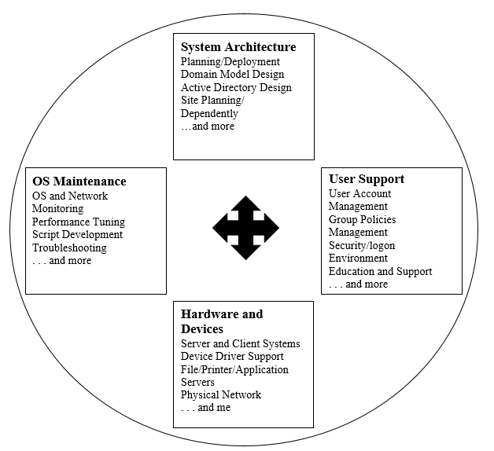

• System Administration
• Duties of System Administrator
• Types of Administrators/Users
• Operating Systems Supporting Administration
• What is System Administration?
• The subject matter of systems administration includes computer systems and the ways people
use them in an organization. This entails a knowledge of operating systems and applications,
as well as hardware and software troubleshooting, but also knowledge of the purposes for
which people in the organization use the computers.
• A system administrator who monitors system health, monitors and allocates system resources
like disk space, performs backups, provides user access, manages user accounts, monitors
system security and performs many other functions performs the task.
• System administration is a job done by IT experts for an organization.
A system administrator's responsibilities might include:
• Applying operating system updates, patches, and configuration changes.
• Installing and configuring new hardware and software.
• Adding, removing, or updating user account information, resetting passwords, etc.
• System performance tuning.
• Responsibility for documenting the configuration of the system.
• Responsibility for security.
• Performing routine audits of systems and software.
• Performing backups.
• Analyzing system logs and identifying potential issues with computer systems.
• Troubleshooting any reported problems.
• Introducing and integrating new technologies into existing data center environments.
• Answering technical queries.
• Insuring that the network infrastructure is up and running.
